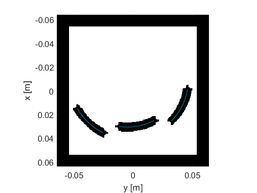

Defining A Source Using An Array Transducer Example
This example provides a demonstration of using the kWaveArray class to define an array transducer with three arc-shaped elements without staircasing errors.
For a more detailed discussion of this example and the underlying techniques, see E. S. Wise, B. T. Cox, J. Jaros, & B. E. Treeby (2019). Representing arbitrary acoustic source and sensor distributions in Fourier collocation methods. The Journal of the Acoustical Society of America, 146(1), 278-288. https://doi.org/10.1121/1.5116132.
Contents
Using the kWaveArray class
When using sources and sensors within k-Wave, the masks are confined to the grid points that form part of the spatial grid. When modelling physical geometries that aren't aligned with the grid points, this can lead to staircasing errors. For example, imagine modelling a piston transducer using makeDisc. The outside of the resulting mask is not smooth but jagged like a set of stairs. This can lead to errors in the acoustic field, particularly at lower grid resolutions. To avoid these errors, k-Wave provides the kWaveArray class. This is a general class for defining array transducers in physical space, and then rendering them on a grid for simulations without staircasing.
To create the transducer array, first an object of the kWaveArray class is created. Elements are then added to the array using the add functions (for example, addArcElement, addDiscElement and so on). These elements are defined by their physical properties and coordinates, not by the grid. In fact, the array object doesn't store any grid information at all, so can be re-used for simulations with different discretisations.
In this example, three arc-shaped elements are added to the array using the addArcElement method. This takes the position of the element in Cartesian space, the radius of curvature, the aperture diameter, and a point on the beam axis which defines the angle of element (specified by the focus_pos variable in the code snippet).
% create empty array karray = kWaveArray; % define arc properties radius = 50e-3; % [m] diameter = 30e-3; % [m] focus_pos = [-20e-3, 0]; % [m] % add arc shaped element elem_pos = [10e-3, -40e-3]; % [m] karray.addArcElement(elem_pos, radius, diameter, focus_pos); % add arc shaped element elem_pos = [20e-3, 0]; % [m] karray.addArcElement(elem_pos, radius, diameter, focus_pos); % add arc shaped element elem_pos = [10e-3, 40e-3]; % [m] karray.addArcElement(elem_pos, radius, diameter, focus_pos);
The array defines the positions of the elements relative to the k-Wave Cartesian coordinate system, which defines the origin centered on the grid. After defining the element positions, it is possible to move the entire array to a different position in space by defining a transformation. The position can be defined using setArrayPosition which takes the translation and rotation of the array, or alternatively using setAffineTransform which directly sets the array transform.
% move the array down 10 mm, and rotate by 10 degrees (this moves all the % elements together) karray.setArrayPosition([10e-3, 0], 10);
Generating the source mask
To use a time-varying source in k-Wave, two things are required: a source mask (which defines which grid points form part of the source) and the source signal. To use arrays defined using kWaveArray with the simulation functions, the array must be converted to these two inputs. To create the source mask, the getArrayBinaryMask method is used as shown below. This takes the kWaveGrid object that will be used for the simulation, and returns a binary mask that can be used with the simulation functions.
% assign binary mask from karray to the source mask
source.p_mask = karray.getArrayBinaryMask(kgrid);
The binary source mask is shown in black below, with the physical transducer elements overlaid in blue. The perfectly matched layer (PML) is shown as the black band around the outside of the domain. A key point to note is that the source mask is non-local. That is, it is bigger than the blue lines (or the equivalent source mask created using makeArc for example). This is because the source mask is created by convolving the band-limited interpolant (BLI) with the physical source geometry (in this case, the arc defined by the blue line). By default, a truncated BLI is used, and the truncation level (defined by the 'BLITolerance' optional input for kWaveArray) defines how far the non-locality will extend. This approach allows source geometries to be defined without staircasing errors.
One practical point of having a larger source mask is that care must be taken that the mask doesn't overlap with the PML or heterogeneities in the domain. The masks from different elements can overlap however - this is accounted for when generating the source signals.
Generating the source signal
The other ingredient for time varying sources in k-Wave is the source signal, for example, source.p. This defines the signal that is used to drive each grid point that forms part of the mask as explained in Time Varying Source Problems. When using an array defined using kWaveArray, the source signals are first defined per physical transducer element. In this example, there are three arc-shaped transducer elements, so three source signals are needed. These are defined using toneBurst, where the tone-burst for each element has a different driving frequency. The signals are then combined into a single matrix of size [number_transducer_elements, number_time_points]. To account for the three tone-bursts having a different length, the signals are padded with zeros.
% set source signals, one for each physical array element f1 = 100e3; f2 = 200e3; f3 = 500e3; sig1 = toneBurst(1/kgrid.dt, f1, 3); sig2 = toneBurst(1/kgrid.dt, f2, 5); sig3 = toneBurst(1/kgrid.dt, f3, 5); % combine source signals into one array source_signal = zeros(2, max(length(sig1), length(sig2))); source_signal(1, 1:length(sig1)) = sig1; source_signal(2, 1:length(sig2)) = sig2; source_signal(3, 1:length(sig3)) = sig3;
The driving signal for each grid point in the source mask, which is required as an input to k-Wave, can be generated automatically using the getDistributedSourceSignal method of the kWaveArray class as shown below. This takes the source signal for each physical transducer element, and calculates the required source signal for each grid point in the source mask using knowledge of physical source geometry and the BLI. One downside of the current implementation is that the source matrices can become quite large, particularly if the source mask is large and the driving signals contain many time steps.
% get distributed source signals (this automatically returns a weighted % source signal for each grid point that forms part of the source) source.p = karray.getDistributedSourceSignal(kgrid, source_signal);
Running the simulation
The simulation is run in the normal way, passing the grid, medium, and source inputs to kspaceFirstOrder2D. A snapshot of the simulation is shown below. The different frequency used to derive the three elements is clearly visible.